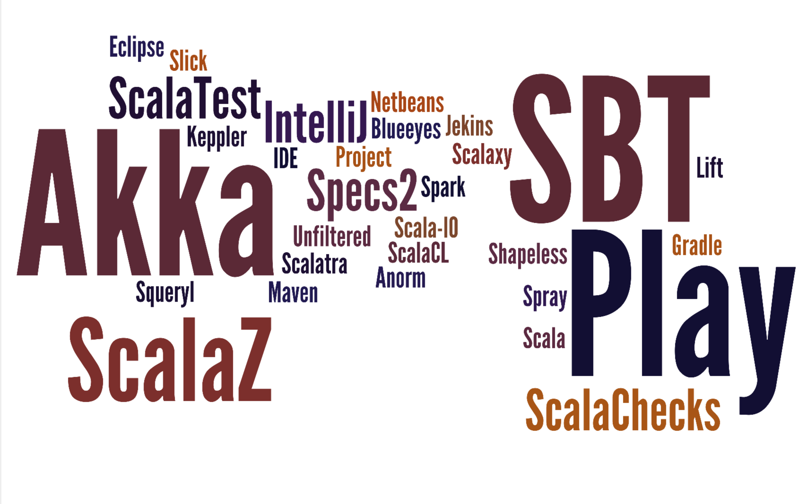
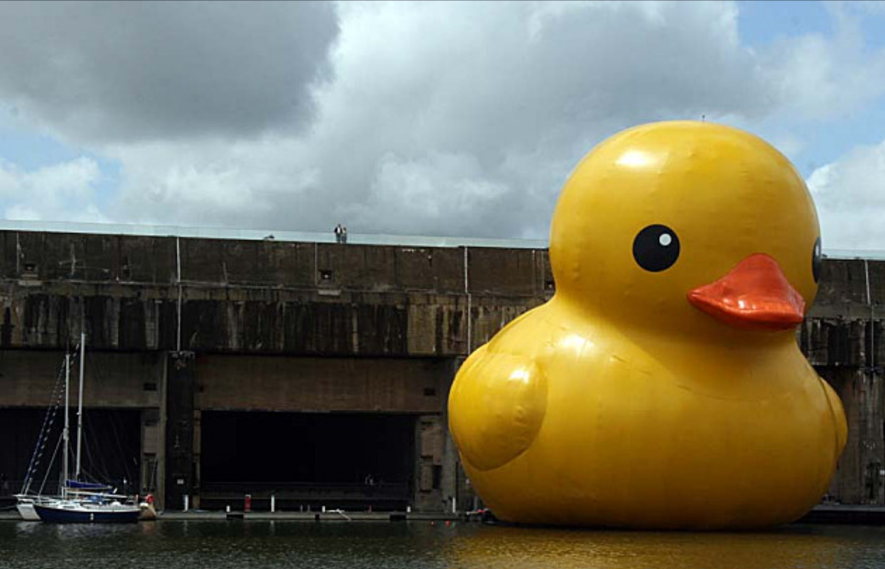

La plus grande force de Scala, c'est la comptabilite avec Java.
La plus grosse faiblesse de Scala, c'est la compatibilite avec Java.
un scalaiste anonyme
Points clés
Interopérabilité avec Java dans les deux sens.
Multi paradigme (OOP, FP, orienté poutrage).
Favorise l'immutabilité.
Scala syntaxe & type
//Scala
val a = 1
//Java
Integer a = new Integer(1);
-- Haskell
a = 1
Scala syntaxe & type
//Scala
case class Personne(nom: String, age:Int)
val dude = Personne("duke", 25)
//Java
public class Personne { /* 20 lignes de code */ }
Personne dude = new Personne("duke", new Integer(25))
-- Haskell
data Personne = Personne {nom:: String, age :: Int)
dude = Personne "duke" 25
Scala syntaxe & type
//Scala
def myAddSquared(x:Int, y:Int) = x * x + y * y
//Java
public Int myAddSquare(Int x, Int y) {return x * x + y * y}
-- Haskell
myAddSquare x y = x * x + y * y
Scala en mode OOP
Le système de type est plus complet !
Les case classes (comme Etudiant).
La covariance ...
trait Personne {
def nom:String
def salue() {println("Bonjour, je m'appelle " + nom + " !")}
}
case class Etudiant(etude:String) extends Personne
val listE:List[Personne] = List(Etudiant("Scala"),
Etudiant("Haskell"))
Scala et son pattern matching
name match {
case "Lisa" ⇒ println("Found Lisa") // Constant
case Person("Bob") ⇒ println("Found Bob") // Constructor
case "Karen" | "Michelle" ⇒ println("Found Karen or Michelle") // Or (?)
case Seq("Dave", "John") ⇒ println("Got Dave before John") // Sequence
case Seq("Dave", "John", _*) ⇒ println("Got Dave before John") // Sequence
case ("Susan", "Steve") ⇒ println("Got Susan and Steve") // Tuple
case x: Int if x > 5 ⇒ println("got a value greater than 5: " + x) // Type, guard
case x ⇒ println("Got something that wasn't an Int: " + x) // Variable
case _ ⇒ println("Not found") // Wildcard
}
FP en Scala
val auCarré = (i:Int) ⇒ i * i
val listCarré= (1 to 100).map(auCarré)
// List(1,4,9,25,36,42, .... )

Ecosystème
Typesafe stack :
Akka
Play
Support des IDE.
Support du tooling Java.
Bibliothèques ...
Scala 2.10 ???
Dynamic
Permet d'avoir du typage dynamique sur certaines expressions :
import language.dynamics
class MyDynamic extends Dynamic {
case class DynamicDuke(start:String) {
def apply(args: Any*):String = {
start + args.toList.map(_.toString).mkString(" ")
}
}
def applyDynamic(method:String) : DynamicDuke = DynamicDuke(selectDynamic(method))
def selectDynamic(method:String): String= "Duke: I "+ method
}
DukeTyping !

Interpolation de chaîne.
val duke = ???
println(s"Bonjour ${duke}")
Les MACROS.
Comment apprendre Scala ?
Learn You a Haskell for Great Good !
Structure and Interpretation of Computer Programs.
Coursera "Functional Programming Principle in Scala".